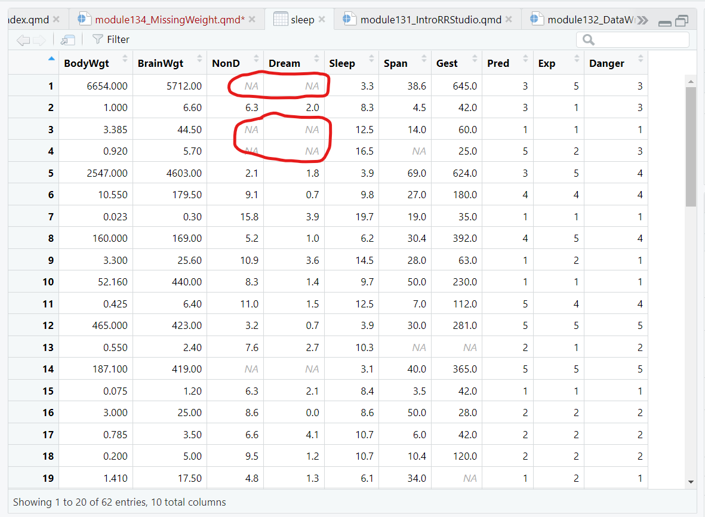
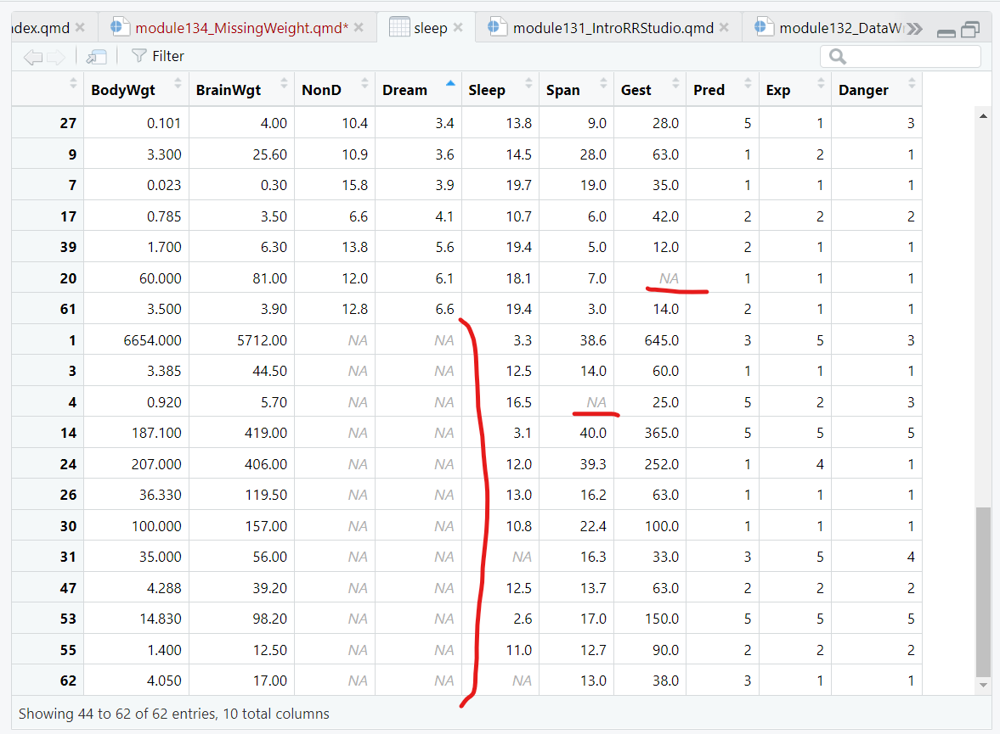
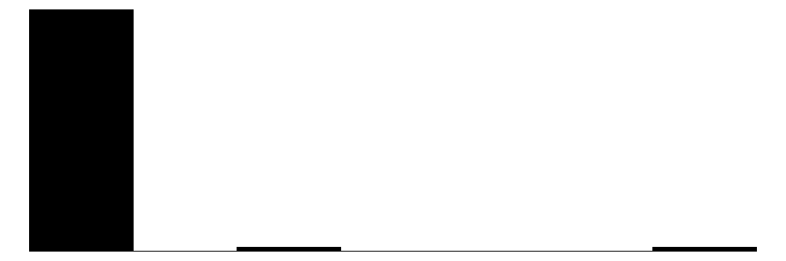
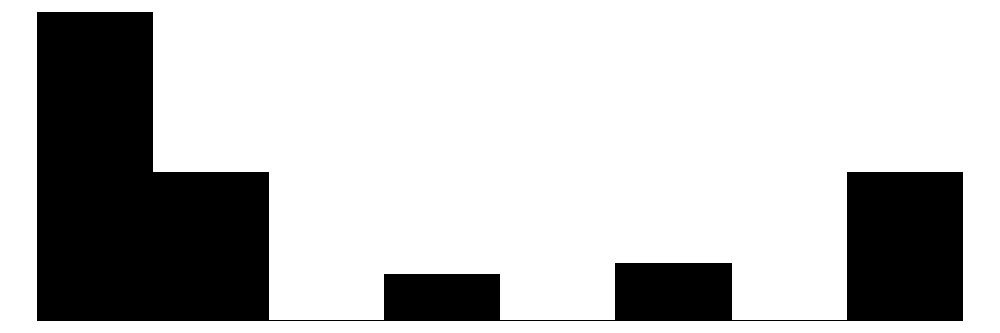
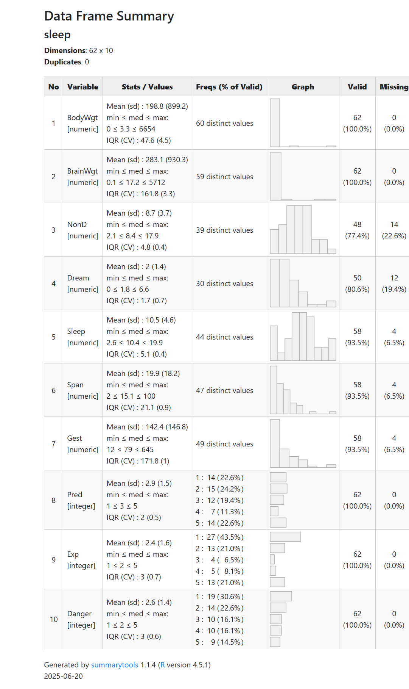
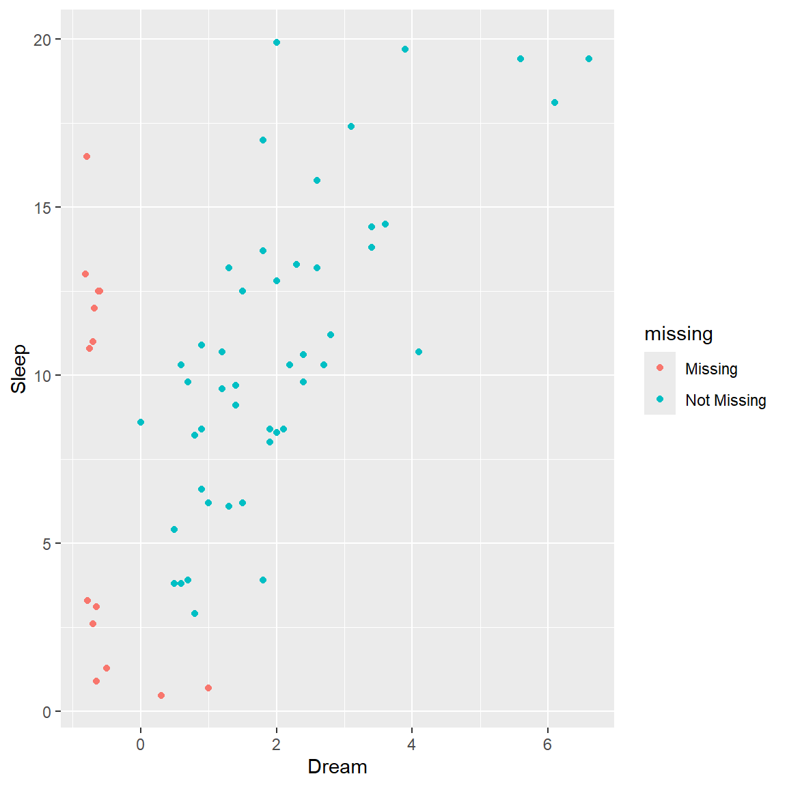
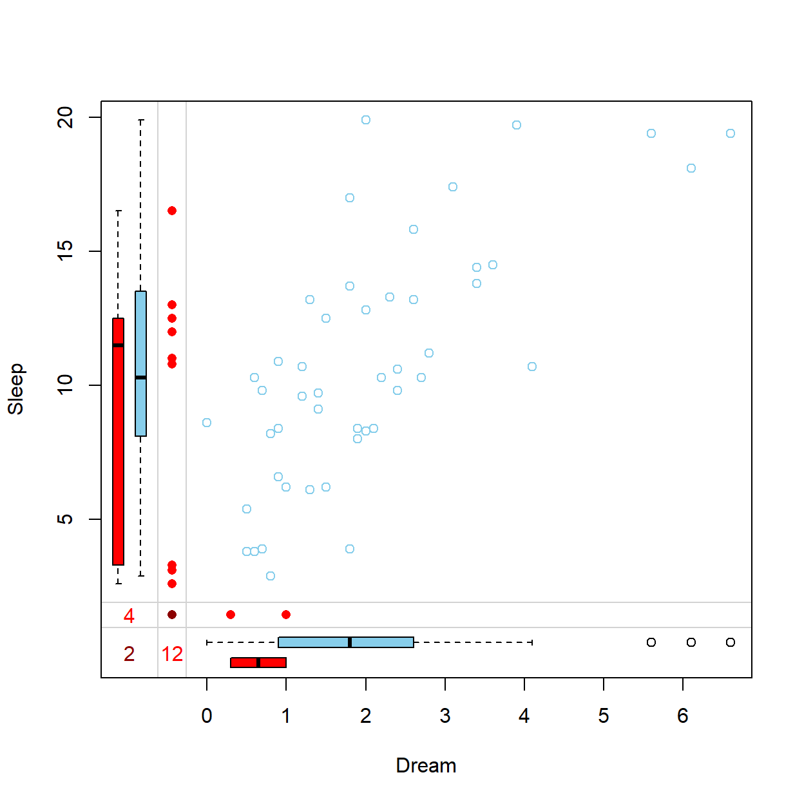
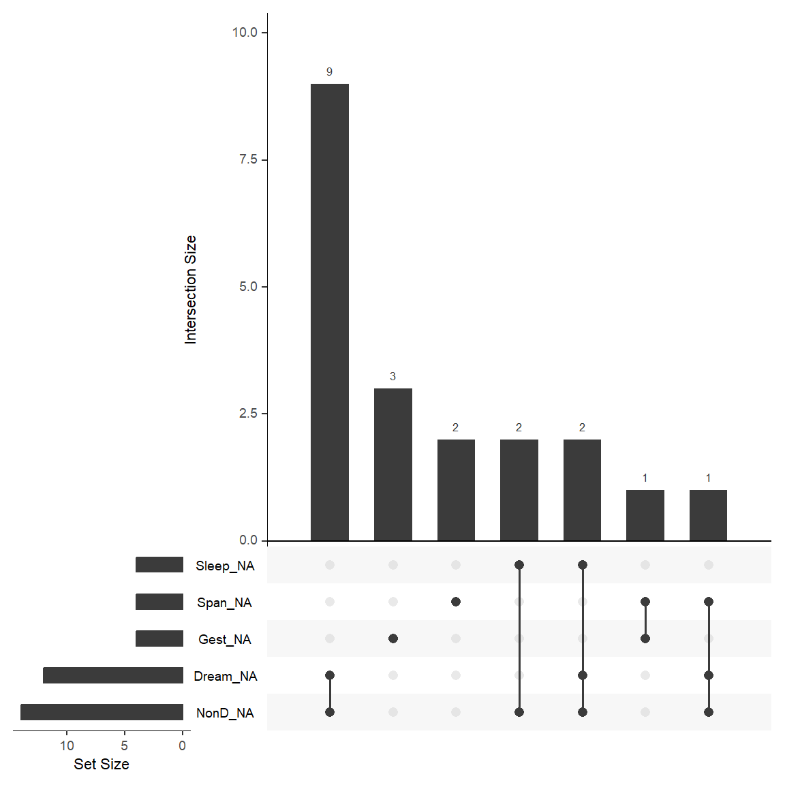
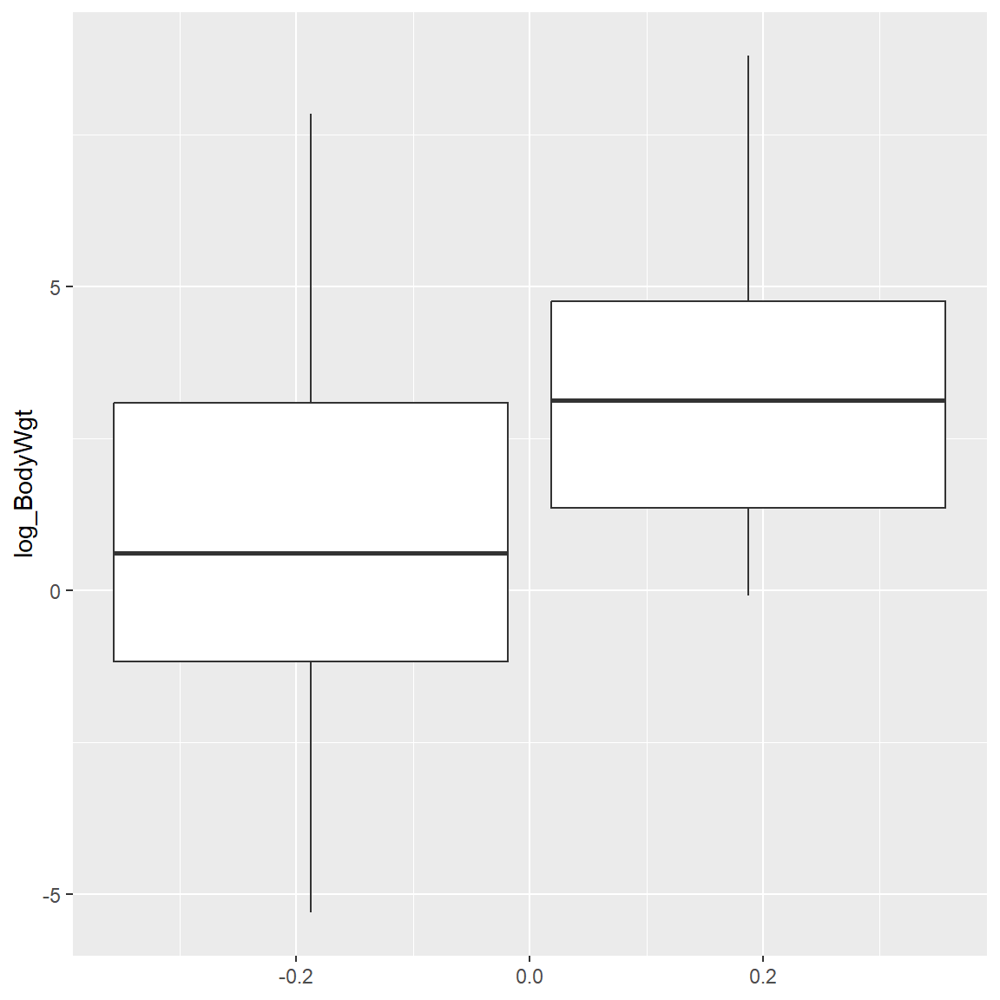
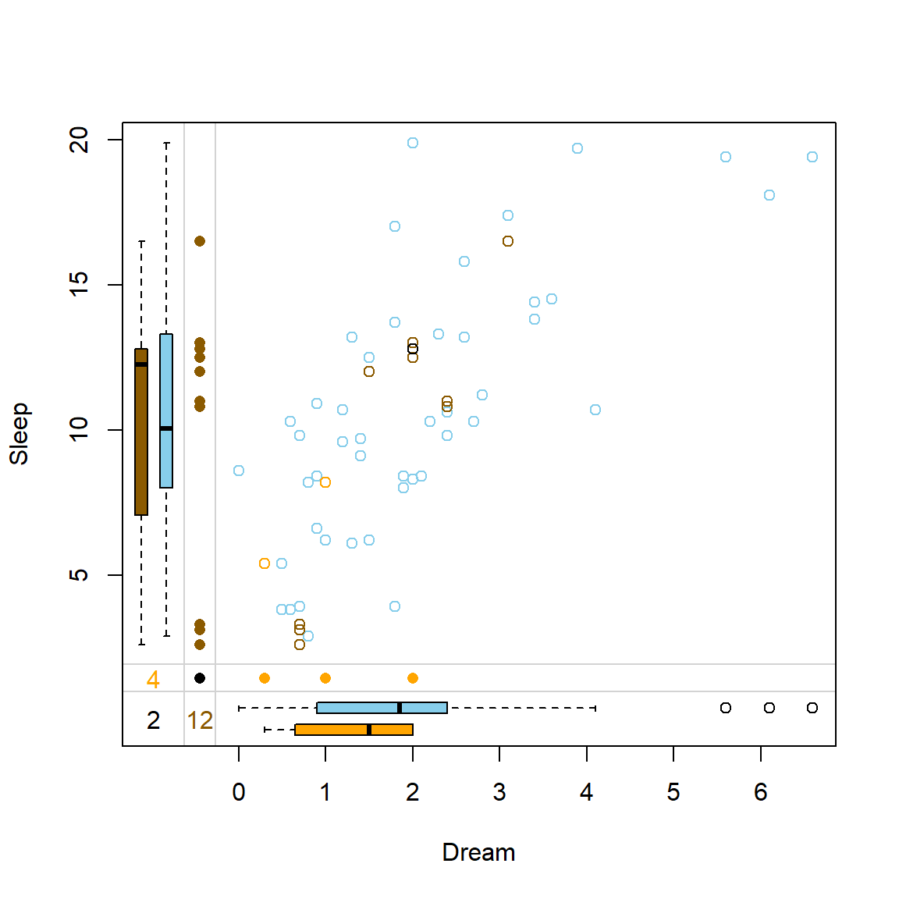

1.3.4: Missing Data and Sampling Weights (brief intro)
(In Person)
Session Objectives (updated)
- Identify, summarize and visualize missing data.
- Missing Data Mechanisms (bias mechanisms or models)
- Missing Data Handling and Imputation Methods (brief intro)
- Impact of Sampling Weights for Survey Data (brief intro)
0. Prework - Before You Begin
A. Install packages
If you do not have them already, install the following packages from CRAN (using the RStudio Menu “Tools/Install” Packages interface):
-
VIMandVIMpackage website - (Optional)
skimrandskimrwebsite - (Optional)
modelsummaryandmodelsummarywebsite - (Optional)
summarytoolsandsummarytoolson Github -
palmerpenguinsandpalmerpenguinswebsite -
ggplot2andggplot2website -
naniarandnaniarwebsite -
dplyr and
dplyrwebsite -
gtsummaryandgtsummarywebsite -
HmiscandHmiscwebsite -
miceand mice website
B. Review these online Book Chapters:
C. Open/create an RStudio project for this lesson
Let’s start with the myfirstRproject RStudio project you created in Module 1.3.2 - part 1. If you have not yet created this myfirstRproject RStudio project, go ahead and create a new RStudio Project for this lesson. Feel free to name your project whatever you want, it does not need to be named myfirstRproject.
1. Identify, summarize and visualize missing data
Find Missing Data in Your Dataset.
One simple way to find missing data is to open it in the Data Viewer window and sort the data.
For example, load the VIM package and take a look at the sleep dataset provided within this package.
Click on the sleep dataset to open it in the data viewer:

Notice the light grey NAs shown for the missing data spots in this dataset.
If we click on the column for the Dream variable and sort these values, notice that the NAs all now show up at the bottom of the viewer window. It does not matter if you sort ascending or descending, the NAs are always at the bottom of the viewer.

This method is ok for a small dataset with not too many variables or rows of data. But let’s look at other ways to summarize the amounts of missing data in your dataset.
Describe Missing Data.
Built-in summary() function
As we saw back in Module 1.3.2, Section 5, we can use the summary() function to get some basic statistics for each variable in the dataset, including the number of NAs.
summary(sleep) BodyWgt BrainWgt NonD Dream
Min. : 0.005 Min. : 0.14 Min. : 2.100 Min. :0.000
1st Qu.: 0.600 1st Qu.: 4.25 1st Qu.: 6.250 1st Qu.:0.900
Median : 3.342 Median : 17.25 Median : 8.350 Median :1.800
Mean : 198.790 Mean : 283.13 Mean : 8.673 Mean :1.972
3rd Qu.: 48.203 3rd Qu.: 166.00 3rd Qu.:11.000 3rd Qu.:2.550
Max. :6654.000 Max. :5712.00 Max. :17.900 Max. :6.600
NA's :14 NA's :12
Sleep Span Gest Pred
Min. : 2.60 Min. : 2.000 Min. : 12.00 Min. :1.000
1st Qu.: 8.05 1st Qu.: 6.625 1st Qu.: 35.75 1st Qu.:2.000
Median :10.45 Median : 15.100 Median : 79.00 Median :3.000
Mean :10.53 Mean : 19.878 Mean :142.35 Mean :2.871
3rd Qu.:13.20 3rd Qu.: 27.750 3rd Qu.:207.50 3rd Qu.:4.000
Max. :19.90 Max. :100.000 Max. :645.00 Max. :5.000
NA's :4 NA's :4 NA's :4
Exp Danger
Min. :1.000 Min. :1.000
1st Qu.:1.000 1st Qu.:1.000
Median :2.000 Median :2.000
Mean :2.419 Mean :2.613
3rd Qu.:4.000 3rd Qu.:4.000
Max. :5.000 Max. :5.000
skimr package
Another helpful package is the skimr package which has the skim() function which provides a count of the amount of missing data and the proportion of complete data for that variable.
skimr package
When “knitting” to HTML the code below creates the summary table with the miniture histograms. However, when “knitting” to PDF (using the default portrait layout) the histograms get cutoff on the page. Additional LaTex customization is needed to change the layout to landscape to be able to see the histograms.
| Name | sleep |
| Number of rows | 62 |
| Number of columns | 10 |
| _______________________ | |
| Column type frequency: | |
| numeric | 10 |
| ________________________ | |
| Group variables | None |
Variable type: numeric
| skim_variable | n_missing | complete_rate | mean | sd | p0 | p25 | p50 | p75 | p100 | hist |
|---|---|---|---|---|---|---|---|---|---|---|
| BodyWgt | 0 | 1.00 | 198.79 | 899.16 | 0.00 | 0.60 | 3.34 | 48.20 | 6654.0 | ▇▁▁▁▁ |
| BrainWgt | 0 | 1.00 | 283.13 | 930.28 | 0.14 | 4.25 | 17.25 | 166.00 | 5712.0 | ▇▁▁▁▁ |
| NonD | 14 | 0.77 | 8.67 | 3.67 | 2.10 | 6.25 | 8.35 | 11.00 | 17.9 | ▅▇▆▃▂ |
| Dream | 12 | 0.81 | 1.97 | 1.44 | 0.00 | 0.90 | 1.80 | 2.55 | 6.6 | ▇▇▃▁▁ |
| Sleep | 4 | 0.94 | 10.53 | 4.61 | 2.60 | 8.05 | 10.45 | 13.20 | 19.9 | ▅▅▇▃▃ |
| Span | 4 | 0.94 | 19.88 | 18.21 | 2.00 | 6.62 | 15.10 | 27.75 | 100.0 | ▇▃▁▁▁ |
| Gest | 4 | 0.94 | 142.35 | 146.81 | 12.00 | 35.75 | 79.00 | 207.50 | 645.0 | ▇▃▁▁▁ |
| Pred | 0 | 1.00 | 2.87 | 1.48 | 1.00 | 2.00 | 3.00 | 4.00 | 5.0 | ▇▇▆▃▇ |
| Exp | 0 | 1.00 | 2.42 | 1.60 | 1.00 | 1.00 | 2.00 | 4.00 | 5.0 | ▇▃▁▂▃ |
| Danger | 0 | 1.00 | 2.61 | 1.44 | 1.00 | 1.00 | 2.00 | 4.00 | 5.0 | ▇▆▅▅▃ |
modelsummary package
Another helpful package is the modelsummary package which has the datasummary_skim() function which is a slightly better version built off the skimr::skim() package and function.
library(modelsummary)
datasummary_skim(sleep) | Unique | Missing Pct. | Mean | SD | Min | Median | Max | Histogram | |
|---|---|---|---|---|---|---|---|---|
| BodyWgt | 60 | 0 | 198.8 | 899.2 | 0.0 | 3.3 | 6654.0 |  |
| BrainWgt | 59 | 0 | 283.1 | 930.3 | 0.1 | 17.2 | 5712.0 |  |
| NonD | 40 | 23 | 8.7 | 3.7 | 2.1 | 8.4 | 17.9 |  |
| Dream | 31 | 19 | 2.0 | 1.4 | 0.0 | 1.8 | 6.6 | |
| Sleep | 45 | 6 | 10.5 | 4.6 | 2.6 | 10.4 | 19.9 | |
| Span | 48 | 6 | 19.9 | 18.2 | 2.0 | 15.1 | 100.0 |  |
| Gest | 50 | 6 | 142.4 | 146.8 | 12.0 | 79.0 | 645.0 | |
| Pred | 5 | 0 | 2.9 | 1.5 | 1.0 | 3.0 | 5.0 |  |
| Exp | 5 | 0 | 2.4 | 1.6 | 1.0 | 2.0 | 5.0 |  |
| Danger | 5 | 0 | 2.6 | 1.4 | 1.0 | 2.0 | 5.0 |  |
summarytools package
Another package that also provides a nice summary of the variables in the dataset, is the dfSummary() from the summarytools dataset.
NOTE: Learn more about how to use summarytools::dfSummary() in an Rmarkdown document at https://cran.r-project.org/web/packages/summarytools/vignettes/rmarkdown.html.
library(summarytools)
view(dfSummary(sleep))
library(palmerpenguins)
summary(penguins) species island bill_length_mm bill_depth_mm
Adelie :152 Biscoe :168 Min. :32.10 Min. :13.10
Chinstrap: 68 Dream :124 1st Qu.:39.23 1st Qu.:15.60
Gentoo :124 Torgersen: 52 Median :44.45 Median :17.30
Mean :43.92 Mean :17.15
3rd Qu.:48.50 3rd Qu.:18.70
Max. :59.60 Max. :21.50
NA's :2 NA's :2
flipper_length_mm body_mass_g sex year
Min. :172.0 Min. :2700 female:165 Min. :2007
1st Qu.:190.0 1st Qu.:3550 male :168 1st Qu.:2007
Median :197.0 Median :4050 NA's : 11 Median :2008
Mean :200.9 Mean :4202 Mean :2008
3rd Qu.:213.0 3rd Qu.:4750 3rd Qu.:2009
Max. :231.0 Max. :6300 Max. :2009
NA's :2 NA's :2 skim(penguins)| Name | penguins |
| Number of rows | 344 |
| Number of columns | 8 |
| _______________________ | |
| Column type frequency: | |
| factor | 3 |
| numeric | 5 |
| ________________________ | |
| Group variables | None |
Variable type: factor
| skim_variable | n_missing | complete_rate | ordered | n_unique | top_counts |
|---|---|---|---|---|---|
| species | 0 | 1.00 | FALSE | 3 | Ade: 152, Gen: 124, Chi: 68 |
| island | 0 | 1.00 | FALSE | 3 | Bis: 168, Dre: 124, Tor: 52 |
| sex | 11 | 0.97 | FALSE | 2 | mal: 168, fem: 165 |
Variable type: numeric
| skim_variable | n_missing | complete_rate | mean | sd | p0 | p25 | p50 | p75 | p100 | hist |
|---|---|---|---|---|---|---|---|---|---|---|
| bill_length_mm | 2 | 0.99 | 43.92 | 5.46 | 32.1 | 39.23 | 44.45 | 48.5 | 59.6 | ▃▇▇▆▁ |
| bill_depth_mm | 2 | 0.99 | 17.15 | 1.97 | 13.1 | 15.60 | 17.30 | 18.7 | 21.5 | ▅▅▇▇▂ |
| flipper_length_mm | 2 | 0.99 | 200.92 | 14.06 | 172.0 | 190.00 | 197.00 | 213.0 | 231.0 | ▂▇▃▅▂ |
| body_mass_g | 2 | 0.99 | 4201.75 | 801.95 | 2700.0 | 3550.00 | 4050.00 | 4750.0 | 6300.0 | ▃▇▆▃▂ |
| year | 0 | 1.00 | 2008.03 | 0.82 | 2007.0 | 2007.00 | 2008.00 | 2009.0 | 2009.0 | ▇▁▇▁▇ |
Visualize Missing Data.
Making plots with VIM package
The VIM package has an “aggregate” function aggr() which counts up the amounts of missing data for each variable and combinations of variables. The sleep dataset only has 10 variables.
Before using the aggr() function, limit the number of variables. FIRST create a dataset with only the variables you are interested in BEFORE running the function - otherwise you may lock up your computer if you feed it too many variables at once.
# get the amount of missing data in the sleep dataset
a <- aggr(sleep, plot = FALSE)
a
Missings in variables:
Variable Count
NonD 14
Dream 12
Sleep 4
Span 4
Gest 4The default output from above only lists the variables that have one or more rows with missing data. However, you can get a list of all of the variables with this code:
a$missings Variable Count
BodyWgt BodyWgt 0
BrainWgt BrainWgt 0
NonD NonD 14
Dream Dream 12
Sleep Sleep 4
Span Span 4
Gest Gest 4
Pred Pred 0
Exp Exp 0
Danger Danger 0Next, let’s get some plots of the missing data in the sleep dataset.
The plot on the LEFT below is a simple bar plot showing the missing counts for each variable in the dataset. Notice that there are only 5 variables with one or more missing values:
NonDDreamSleepSpanGest
The plot on the RIGHT however, shows the amounts of missing data for the various patterns of missing data for the 10 variables in the sleep dataset. For example, notice that of the 62 rows of data in the sleep dataset:
- there are only 42 rows with complete data with no missing data on all 10 variables (i.e., 42/62 = 67.7% of the data is complete for all 10 variables);
- the next largest “pattern” of missing data is 9 rows that have both
NonDandDreamvariables with missing values; and - there are 3 rows of data with the
gestvariable having missing data.
# make plots of the amounts and patterns of missing data
plot(a, numbers = TRUE, prop = FALSE)
Exploring patterns of missingness can be informative to better understand why the data might be missing and possibly provide insights into the underlying mechanisms causing or leading to the missing data.
Marginplots - see how missingness varies with other measures
In addition to a usual scatterplot, the marginplot() function in the VIM package, also shows information about missing values in the plot margins.
The red boxplot on the left shows the distrubution of all values of Sleep where Dream contains a missing value. The blue boxplot on the left shows the distribution of the values of Sleep where Dream is observed.
x <- sleep[, c("Dream", "Sleep")]
marginplot(x)
Visualize Missing Data with the naniar package
The naniar package “provides principled, tidy ways to summarise, visualise, and manipulate missing data with minimal deviations from the workflows in ggplot2 and tidy data.” See naniar website.
For example, let’s make a similar to plot to what we did above to visualize the scatterplot between Dream and Sleep but also consider the amounts of missing data of one variable relative to the other variable in the plot. We can do this using the geom_miss_point() function provided in the naniar package which works with ggplot2.
We can also create an UpSet plot which is useful for visualizing intersections between sets. In the case of missing data, we are interested in visualizing how the missing data for each variable overlaps with each other (i.e., the missing data patterns).
To create an UpSet plot for the missing data patterns for the 10 variables in the sleep dataset, we can use the gg_miss_upset() function. The plot produced is similar to the plot above from the VIM package.
Notice that the plot ONLY shows patterns for the 20 of 62 rows and for the 5 of 10 variables with any missing data. The plot shows that:
- 9 rows have missing data for both the
DreamandNonDvariables - 3 rows have missing data for the
Gestvariable - 2 rows have missing data for the
Spanvariable - 2 rows have missing data for both
SleepandNonD - 2 rows have missing data for
Sleep,DreamandNonDvariables - 1 row has missing data for both
SpanandGest - 1 row has missing data for
Span,DreamandNonDvariables
gg_miss_upset(sleep)
2. Missing Data Mechanisms (bias mechanisms or models)
Why should we worry about missing data?
Setting aside bias concerns for the moment, missing data logistically causes issues with code - especially in R. At first glance this seems to be a huge pain since we get errors or nonsensical output. But these issues force us to deal with the missing data and provide explicit instructions to the computer code on how we want to address the missing data. Learn more in the Flexible Imputation of Missing Data BOOK.
Impact of missing data for descriptive stats like the mean
For example, let’s find the mean of the Dream variable in the sleep dataset.
mean(sleep$Dream)[1] NAWe get NA since there is missing data for the Dream variable, thus the mean of all rows is “not available”. So, we need to tell R to first remove the missing values (the NAs) prior to computing the mean.
mean(sleep$Dream, na.rm = TRUE)[1] 1.972Impact of missing data for summary statistics
We did do a deep dive above and we know that there are 12 rows with missing values for the Dream variable. But if we had run the mean() function with na.rm = TRUE, we might not have know just how much data was missing. So, it is always a good idea to make sure to check for missing data and assess how much you have PRIOR to conducting any analyses.
As we saw in Module 1.3.2, section 5 we can use the gtsummary package with the tbl_summary() function to get better summary statistics including a list of the amount of unknown (missing) rows. Let’s get the means (and standard deviations) for 3 of the variables in the sleep dataset. Notice that there are no “unknowns” for BrainWgt since it has no missing values.
gtsummary::tbl_summary()
Learn more at Multiline Summaries Using tbl_summary() on how I customized this table to include the count (N) of non-missing rows, mean and standard deviation along with the counts for the unknowns.
library(dplyr)
library(gtsummary)
sleep %>%
select(Dream, Gest, BrainWgt) %>%
tbl_summary(
type = all_continuous() ~ "continuous2",
statistic = all_continuous() ~ c(
"{N_nonmiss}",
"{mean} ({sd})"
)
)| Characteristic | N = 62 |
|---|---|
| Dream | |
| N Non-missing | 50 |
| Mean (SD) | 1.97 (1.44) |
| Unknown | 12 |
| Gest | |
| N Non-missing | 58 |
| Mean (SD) | 142 (147) |
| Unknown | 4 |
| BrainWgt | |
| N Non-missing | 62 |
| Mean (SD) | 283 (930) |
Impact of missing data for regression models
When running a model, like a regression model between Dream and Sleep, let’s look at the summary output from fitting a linear model using the built-in lm() function:
Call:
lm(formula = Sleep ~ Dream, data = sleep)
Residuals:
Min 1Q Median 3Q Max
-6.2765 -2.0384 -0.1096 2.1599 9.2624
Coefficients:
Estimate Std. Error t value Pr(>|t|)
(Intercept) 6.0273 0.7960 7.572 1.27e-09 ***
Dream 2.3051 0.3209 7.183 4.85e-09 ***
---
Signif. codes: 0 '***' 0.001 '**' 0.01 '*' 0.05 '.' 0.1 ' ' 1
Residual standard error: 3.178 on 46 degrees of freedom
(14 observations deleted due to missingness)
Multiple R-squared: 0.5287, Adjusted R-squared: 0.5184
F-statistic: 51.59 on 1 and 46 DF, p-value: 4.849e-09Notice the output tells us that (14 observations deleted due to missingness). So this model was fit with only 62-14 = 48 rows (77.4%) of the original 62 rows of data. The model was fit using only the complete dataset based on the 2 variables in the model: Dream and Sleep, where
- there are 10 rows missing data for only the
Dreamvariable, - 2 rows missing data for both
DreamandSleepvariables, - and 2 rows missing data for only the
Sleepvariable.
Keep in mind, when you are fitting any model (linear or logistic regression, analysis of variance, etc), the default is (almost) always to use a LISTWISE deletion, which removes ALL rows with any missing data on any of the variables considered in the model - including predictors, covariates, and outcome(s).
Impact of missing data for correlation matrix - cor() function
Let’s also look at a small correlation matrix considering PAIRWISE versus LISTWISE deletion of missing data for 3 variables from the sleep dataset. Notice that the correlation between BrainWgt and Dream and Sleep are slightly different between LISTWISE and PAIRWISE approaches. These are all pearson correlations by default.
LISTWISE deletion
# LISTWISE deletion, use = "complete.obs"
sleep %>%
select(BrainWgt, Dream, Sleep) %>%
cor(use = "complete.obs") BrainWgt Dream Sleep
BrainWgt 1.00000000 -0.08437367 -0.3221748
Dream -0.08437367 1.00000000 0.7270870
Sleep -0.32217479 0.72708696 1.0000000PAIRWISE deletion
Impact of missing data for correlation matrix - Hmisc package
There is also a helpful correlation function rcorr() in the Hmisc package. From this function we can save the output and get the n’s and p-values in addition to the (Pearson) correlations. These numeric data have to be converted to a numeric matrix prior to inputting them to the rcorr() function, which is why as.matrix() is used in the code chunk below.
NOTE: PAIRWISE deletion is the default setting for Hmisc::rcorr().
Show the correlations:
c1$r BrainWgt Dream Sleep
BrainWgt 1.0000000 -0.1051388 -0.358102
Dream -0.1051388 1.0000000 0.727087
Sleep -0.3581020 0.7270870 1.000000Get the sample sizes for each correlation in the matrix:
c1$n BrainWgt Dream Sleep
BrainWgt 62 50 58
Dream 50 50 48
Sleep 58 48 58Get each individual p-value for each correlation:
c1$P BrainWgt Dream Sleep
BrainWgt NA 4.674359e-01 5.779531e-03
Dream 0.467435869 NA 4.849120e-09
Sleep 0.005779531 4.849120e-09 NANote: The rcorr() function uses a PAIRWISE missing values deletion approach. If we want the LISTWISE correlations, we have to get complete data first. Use complete.cases() from the built-in stats package with dplyr::filter() to pull out only the 48 rows in the sleep dataset with complete cases on these 3 variables.
Show the correlations:
c2$r BrainWgt Dream Sleep
BrainWgt 1.00000000 -0.08437367 -0.3221748
Dream -0.08437367 1.00000000 0.7270870
Sleep -0.32217479 0.72708696 1.0000000Get the sample sizes for each correlation in the matrix:
c2$n BrainWgt Dream Sleep
BrainWgt 48 48 48
Dream 48 48 48
Sleep 48 48 48Get each individual p-value for each correlation:
c2$P BrainWgt Dream Sleep
BrainWgt NA 5.685642e-01 2.553771e-02
Dream 0.56856416 NA 4.849120e-09
Sleep 0.02553771 4.849120e-09 NAMissing Data Mechanisms
There are entire books and entire courses dedicated to understanding and dealing with missing data mechanisms, which we will not have time to go into depth in this TIDAL course.
Learn more at:
- https://stefvanbuuren.name/fimd/sec-MCAR.html
- BOOK: Statistical Analysis with Missing Data, Third Edition, by Roderick Little, Donald Rubin
The 3 missing data mechanisms to know are:
- MCAR = “missing completely at random”
- This assumes that the missingness is not related to the data at all.
- If the probability of being missing is the same for all cases, then the data are said to be missing completely at random (MCAR).
- MAR = “missing at random”
- If the probability of being missing is the same only within groups defined by the observed data, then the data are missing at random (MAR).
- For example, if people with higher levels of depression who were more likely to not answer a question or not complete the study, the the missingness is “dependent” upon depression levels measured in the study.
- MNAR (or NMAR) = “missing not at random (not missing at random)”
- MNAR means that the probability of being missing varies for reasons that are unknown to us.
- An example of MNAR in public opinion research occurs if those with weaker opinions respond less often (e.g., non-response bias).
There is a nice summary of different approaches and assumptions and the effects to the models and statistical estimates, see FIMD Book, Section 1.3.8 Summary. This table illustrates that many “ad hoc” missing imputation approaches can result in standard errors that are too large or too small leading to incorrect calculations for p-values and confidence intervals.
Compare rows with and without missing data
Let’s take a look at the BodyWgt and BrainWgt variables and compare the values for rows with and without missing data for the Dream variable. Here are the steps involved:
- Create an indicator variable where 0=not missing and 1=missing for the
Dreamvariable. - Run comparisons for the rows (subjects) with and without missing
Dreamdata. - Potentially make plots to compare the rows with and without missing values for
Dream.
Note: Both BodyWgt and BrainWgt are highly right skewed, so I did a log transform of both. Notice that the p-values for the non-parametric independent group test (Mann Whitney/Wilcoxon Rank Sum test) are the same, since the tests are based on ranks.
# make small dataset
s1 <- sleep %>%
select(BodyWgt, BrainWgt, Dream)
# add missing indicator
s1$Dream_missing <- as.numeric(is.na(s1$Dream))
# both BodyWgt and BrainWgt are highly right skewed
# do a log transform of both
s1 <- s1 %>%
mutate(log_BodyWgt = log(BodyWgt),
log_BrainWgt = log(BrainWgt)) Table comparing BodyWgt and BrainWgt for rows with and without missing Dream data. Both are statistically significant - the animals with missing Dream values are larger (bigger body and brain weights).
s1 %>%
tbl_summary(
by = Dream_missing,
include = c(BodyWgt, log_BodyWgt,
BrainWgt, log_BrainWgt)
) %>%
add_p()| Characteristic |
0 N = 501 |
1 N = 121 |
p-value2 |
|---|---|---|---|
| BodyWgt | 2 (0, 28) | 25 (4, 144) | 0.020 |
| log_BodyWgt | 0.61 (-1.27, 3.32) | 3.13 (1.31, 4.92) | 0.020 |
| BrainWgt | 12 (3, 169) | 77 (28, 282) | 0.041 |
| log_BrainWgt | 2.50 (1.10, 5.13) | 4.31 (3.25, 5.53) | 0.041 |
| 1 Median (Q1, Q3) | |||
| 2 Wilcoxon rank sum test | |||
Side-by-side boxplots for the (log) of BodyWgt for rows with missing Dream data and without.
ggplot(s1, aes(group = Dream_missing,
y = log_BodyWgt)) +
geom_boxplot()
3. Missing Data Handling and Imputation Methods (brief intro)
Imputation - Mean Substitution
There are many ideas and options for creating data to “fill-in” or “impute” the spots for the missing values. Keep in mind that these methods are “making up” new (unobserved) data. Ideally, the missing imputation methods should be as unbiased as possible and should not increase or decrease the variability of the data. As good as some methods may be, always keep in mind that we will never know for sure if these new imputed data are “correct” or if they are the best they can be.
A simple example, suppose we have a variable with 5 numbers. Let’s compute the mean and standard deviation of these numbers.
Now let’s set the 1st value to missing - replace the 2 with NA. Notice that the mean increases and the standard deviation decreased slightly from 3.114 to 3.109.
Now, let’s take the mean we just computed from the 4 non-missing values which was 5.5 and substitute it in for the missing value and recompute the new mean and standard deviation.
IMPORTANT The new mean of xsub is the same = 5.5 as the mean for xna, but the standard deviation for this new list of 5 numbers is much smaller = 2.693 down from 3.109. And this “shrinking” of the standard deviation is even more pronounced from the original 5 numbers which was 3.114 for x. And the mean of the original numbers was 4.8 which is smaller than the mean-subtituted list for xsub.
This is a simple example and illustrates why we don’t want to use mean-substitution for missing data. It also highlights that the goals of missing data imputation ideally shouldn’t cause bias for estimating statistics like the mean and shouldn’t increase or decrease the underlying variance of the original variables. And in theory the new variable with imputed data also shouldn’t change the correlations (relationships) between the variables in the dataset. As you can see this can get complex rapidly and no imputation method is perfect. Often multiple missing inputation methods should be explored and some methods may work better for different models and statistical tests than others.
The one place where I see mean substitution used often is for survey instruments. For example the CESD (Center for Epidemiological Studies-Depression) which has 20 items with a 4-point Likert-scaled response coded 0, 1, 2, 3.
For this instrument you can compute a valid score from only 16 of the 20 items by taking the mean of these 16 items. This is equivalent to using mean-substitution for the 4 missing responses (e.g. CESD allows up to 20% missing items within a given subject, within a given row of data). But this is ROWWISE mean substitution. The example above is illustrating COLUMNWISE mean substitution.
To avoid mean-substitution bias even for ROWWISE substitution, you ideally want to use this on less than 5%-10% of your sample. If more than 5%-10% of your sample is not completing the survey, there may still be underlying response bias issues that need to be addressed.
Example of k-nearest neighbor (kNN) missing imputation method
Instead of using mean substitution, let’s look at another method - k-nearest neighbor, which is a “donor-based” method. Learn more at:
Let’s take the little dataset x which is a subset of the sleep dataset which has all 62 rows but only the Dream and Sleep variables. For these 2 variables, let’s see what the kNN() (k-nearest neighbor) function in the VIM package does.
Now look at a scatterplot plot for these new Dream and Sleep variables with imputed values from the k-nearest neighbor approach. Notice the coloring of the points - the blue are the original values and the other colors represent the structure of missings.
- brown points represent values where Dream was missing initially
- beige points represent values where Sleep was missing initially
- black points represent values where both Dream and Sleep were missing initially
The kNN() method appears to preserve the correlation between Dream and Sleep.
marginplot(x_imputed, delimiter = "_imp")
kNN imputed values - compare correlations before and after
Let’s compare the results before and after the imputation for correlation and for a simple regression model. This is a “sensitivity” test of sorts. It is always a good idea to compare the results before and after applying any imputation method.
Correlation Original Data:
Dream Sleep
Dream 1.00 0.73
Sleep 0.73 1.00
n
Dream Sleep
Dream 50 48
Sleep 48 58
P
Dream Sleep
Dream 0
Sleep 0 Correlation kNN Imputed Data:
kNN imputed values - compare regression before and after
Simple Linear Regression Original Data:
Call:
lm(formula = Sleep ~ Dream, data = x)
Residuals:
Min 1Q Median 3Q Max
-6.2765 -2.0384 -0.1096 2.1599 9.2624
Coefficients:
Estimate Std. Error t value Pr(>|t|)
(Intercept) 6.0273 0.7960 7.572 1.27e-09 ***
Dream 2.3051 0.3209 7.183 4.85e-09 ***
---
Signif. codes: 0 '***' 0.001 '**' 0.01 '*' 0.05 '.' 0.1 ' ' 1
Residual standard error: 3.178 on 46 degrees of freedom
(14 observations deleted due to missingness)
Multiple R-squared: 0.5287, Adjusted R-squared: 0.5184
F-statistic: 51.59 on 1 and 46 DF, p-value: 4.849e-09Simple Linear Regression kNN Imputed Data:
Call:
lm(formula = Sleep ~ Dream, data = x_imputed)
Residuals:
Min 1Q Median 3Q Max
-6.241 -2.283 -0.221 2.157 9.257
Coefficients:
Estimate Std. Error t value Pr(>|t|)
(Intercept) 5.6222 0.6920 8.125 3.00e-11 ***
Dream 2.5106 0.2949 8.512 6.58e-12 ***
---
Signif. codes: 0 '***' 0.001 '**' 0.01 '*' 0.05 '.' 0.1 ' ' 1
Residual standard error: 3.074 on 60 degrees of freedom
Multiple R-squared: 0.547, Adjusted R-squared: 0.5395
F-statistic: 72.46 on 1 and 60 DF, p-value: 6.579e-12Notice that the correlations were similar. The regression intercepts and slopes were slightly different and the “Std. Error” for the regression coefficients for the imputed model were smaller than for the original data.
Example of multiple missing imputation method (using mice)
Let’s take a look at the mice (Multivariate Imputation by Chained Equations) package. The mice package provides for Multiple imputation using Fully Conditional Specification (FCS) implemented by the MICE algorithm as described in Van Buuren and Groothuis-Oudshoorn (2011).
Let’s re-run the simple linear regression model above, but this time let’s create 20 imputed datasets, run 20 regression models and then pool the results. See FIMD Book Section 1.4
Compare these regression results to the models above. Notice that the “std.error” for the regression coefficients are larger than they were for the kNN results and closer to fitting the model with the original data.
library(mice)
imp <- mice(x, seed = 1, m = 20, print = FALSE)
fit <- with(imp, lm(Sleep ~ Dream))
summary(pool(fit)) term estimate std.error statistic df p.value
1 (Intercept) 5.904120 0.7560889 7.808764 48.78611 3.858037e-10
2 Dream 2.326442 0.3216144 7.233638 45.29561 4.431364e-09We can “peek under the hood” to look at one of the individual imputed datasets by running the following code. If you’d like to look at another model just change 1 to another number up to 20 (since there were 20 imputations performed).
# see simple output
fit[["analyses"]][[1]]
# get summary detailed output
summary(fit[["analyses"]][[1]])
Call:
lm(formula = Sleep ~ Dream)
Coefficients:
(Intercept) Dream
6.090 2.216
Call:
lm(formula = Sleep ~ Dream)
Residuals:
Min 1Q Median 3Q Max
-7.4782 -2.0541 0.0424 2.2630 9.3787
Coefficients:
Estimate Std. Error t value Pr(>|t|)
(Intercept) 6.0897 0.7318 8.322 1.39e-11 ***
Dream 2.2158 0.2953 7.504 3.45e-10 ***
---
Signif. codes: 0 '***' 0.001 '**' 0.01 '*' 0.05 '.' 0.1 ' ' 1
Residual standard error: 3.407 on 60 degrees of freedom
Multiple R-squared: 0.4841, Adjusted R-squared: 0.4755
F-statistic: 56.31 on 1 and 60 DF, p-value: 3.449e-104. Impact of Sampling Weights for Survey Data (brief intro)
see Missing Data in PRAMS module.
R Code For This Module
References
Other Helpful Resources
Missing Data Resources
- CRAN Task View for Missing Data
- R-miss-tastic Website
- Flexible Imputation of Missing Data (online book for 2nd edition) by Stef van Buuren
- Blog post on Missing Data Visualization in R using ggplot2
- Missing data R tutorial
- CRAN Task View on Missing Data
- A resource website on missing values
- Handling missing values with R - tutorial
- Blog post “My favourite R package for: summarising data”
and